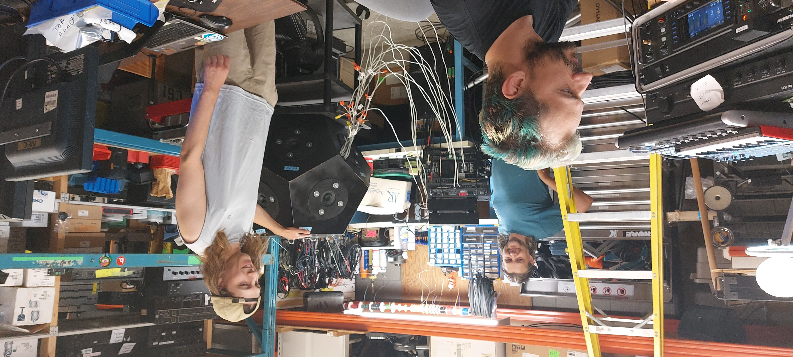

OMNI DIRECTIONAL SPEAKER ARRAY
Project for ECE 499 UVic 2022
About The Team
- Brett Faulkner V00220462
- Samuel Akpan V00857075
- Morgan Cave V00798587
Project Background
The first purpose of this project was to design and construct an omnidirectional dodecahedron loudspeaker capable of offering fully three-dimensional spatial sensation to its listeners, capable of dispersing audio in any direction, changing direction with time and/or external control. The second was to reproduce acoustic instruments that have been recorded using spherical microphone configurations. A dodecahedron was chosen as it is functionally the closest feasible object to build that resembles a sphere (which would be a perfectly omnidirectional point source if such a thing were somehow able to be covered in infinitesimally small speakers in order to send audio in any possible direction).
Design
Construction was accomplished using a dodecahedron shell made out of MDF, with backing boxes and faceplates for 12 speakers. The speakers are powered by 12 separate amplification channels fed by a USB audio interface whose outputs are controlled by Reaper, a highly customizable DAW. A digital audio workstation would need to be the brains of the operation, so choosing an appropriately programmable software was the aim. The speakers would need to be individually amplified, so there would need to be a USB audio interface with a minimum of 12 output channels to go into the amplifiers. The corresponding 12 amplifiers would need to be power-matched to the speakers. The speaker housing itself was already in existence, with the enclosures set up to take 4-inch speakers. As such it would need to have twelve 4-inch speakers. In keeping with the aforementioned Principle 3 of the EGBC code, with appropriate respect for noise bylaws, the speakers would need to have a mean SPL of not more than 90dB.
Results

This project culminated in a successful build of an omnidirectional dodecahedron loudspeaker system, configured to function as a software-controlled effects unit. In addition to that, we were able to play back recordings of individual instruments recorded using spherical microphone arrays in order to listen to the differences in timbre and unique changes in characteristics depending on the listener’s location. During our public demonstration, the sheer depth and space of the listening experience drew vast attention as people were able to experience these things.
Acknowledgement
We acknowledge and respect the lək̓ʷəŋən peoples on whose traditional territory the University of Victoria stands, and the Songhees, Esquimalt and W̱SÁNEĆ peoples whose historical relationships with the land continue to this day. We would like to give thanks to our project supervisor Peter Driessen for contributing his advice and the project concept from the Music projects section of his website. We would also like to thank the ECE department technical staff, our teaching assistant Xiangyu Ren, the ECE chairman Dr. Michael McGuire, and our friends at Pacific Audio Works (with a special thanks to John Blythe for his expertise in testing) for helping us realize this project. Additionally, thank you to our speaker manufacturer Newark and the ECE Music students from the past who first conceptualized the dodecahedron loudspeaker design and began construction of the prototype.